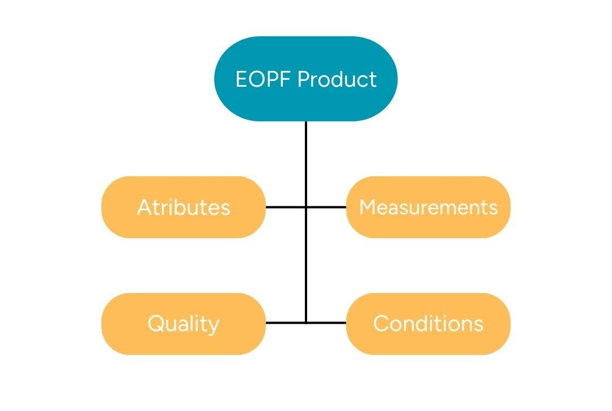

1 Introduction to the Earth Observation Processor Framework
What is the Earth Observation Processor Framework?
The Earth Observation Processor Framework (EOPF) is an initiative led by the European Space Agency (ESA) designed to modernise and harmonise data from the Copernicus Sentinel Missions.
With the upcoming Copernicus Expansion missions in 2028, the amount of data will significantly increase. EOPF is ESA’s solution to organise Sentinel data in a way that works seamlessly with modern cloud technology. This will make it easier to find, access, and process the information you need. The new approach provides user-friendly access, simplifies maintenance, and helps keep costs down, guaranteeing reliable access to Sentinel data in the long run.
The Sentinel-1, Sentinel-2, and Sentinel-3 missions are the first to be updated with this new system.
The EOPF Data Model
The EOPF data model has been defined by following a set of principles:
- Open standards: Following common and community approved data standards ensure sustainability and user uptake.
- Interoperability: Harmonised with a clear and organised structure that describes the data itself.
- Cloud optimisation: Designed for efficient access and handling in cloud environments.
- Conversion flexibility: Providing tools to adjust the data for different applications.
To achieve this, there are the following key development areas under EOPF:
EOPF product structure
The EOPF prodcut structure defines how information about the data is structured, stored, and connected. It contains the key details we need to know about a dataset, like when it was collected or its level of detail (the attributes). As part of the EOPF, ESA is actively working on a common data structure for Sentinel data products, with the aim to define a common meta-model that can be used nacross all Sentinel and other EO missions. This approach ensures that data from several missions is consistent. Thus, it is easier to combine, relate, and evaluate data from different missions.

The EOPF product structure contains of the following key parts:
- Measurements: The actual sensor readings (like how much light is reflected or the temperature), at different levels of detail.
- Quality indicators: Details that help understand how reliable the measurements are.
- Conditions: Information about the environment or technical aspects when the data was collected.
- Attributes: Global metadata, such as when it was acquired and the sensor’s orbit.
Metadata Structure
Metadata can be seen as data about data, which provides essential information to understand and use data effectively. Inside the Copernicus ecosystem, it allows us to uniquely identify each Sentinel product by detailing its technical and geographic coverage information. To make sure the new data system works well and avoids redundancy, the EOPF metadata structure will be organised into:
- Discovery Metadata: Following the metadata structure defined by the SpatioTemporal Asset Catalogue (STAC), which helps to keep things consistent across different missions.
- Processing History Metadata: keeping a record of how the data has been processed.
- Other Metadata: Information like the status of the sensor and details about the satellite’s orbit.
“Learn more about EOPF and STAC here.”
Encoding Structure
An encoding structure can be seen as the specific method used to package and store data and its associated metadata in a digital format. Building on the consistent data structure and clear metadata, the new storage system must be capable of handling various aspects of current Sentinel data (such as manifest files and tile structures from the SAFE format) while remaining fully compatible with cloud environments.
This cloud-friendly architecture will enable instant access to data, efficient processing of massive amounts of data, and seamless integration with other datasets, allowing you to work with data from multiple missions more effectively.
Currently, there are different ways to store geospatial data in the cloud, such as: - Zarr - Cloud-Optimised GeoTIFF (COG) - Hierarchical Data Format (HDF5) with Cloud Adaptations - Apache Parquet (with GeoParquet Extension)
ESA chose .zarr as encoding format as it allows for efficient handling of data, like selecting specific areas and combining different datasets easily (for example, by dividing the data into smaller chunks). Learn more about the EOPF Zarr format here.
Learn more about cloud-optimised geospatial data formats in the Cloud-Optimised Geospatial Data Formats Guide
Processor Development
The way Sentinel data is processed is being updated to take advantage of modern cloud computing. This will make the processing faster and more efficient, while ensuring the scientific quality and accuracy of the Sentinel data remains the same.
To learn more about the EOPF processor framework, visit https://eopf.copernicus.eu/eopf/
What’s next?
In the following chapters, we will introduce the details of the new EOPF data structure, explain the reasons behind ESA’s choice of data storage methods, and help the community become comfortable with the new EOPF data format.